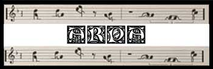
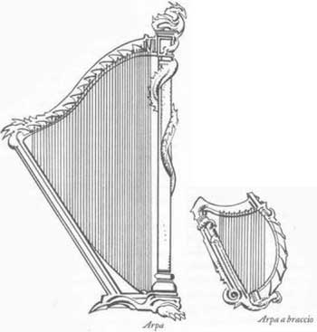
Sotto questo
nome vengono attualmente classificati una serie di cordofoni caratterizzati
dalla perpendicolarità del piano di giacenza delle corde con quello della tavola
armonica. Le arpe si dividono in due categorie a secondo delle loro dimensioni.
Alcune, le cd. arpe a braccio, sono abbastanza piccole da essere
trasportate appese a una cinghia, altre invece, le cd. arpe grandi, sono
troppo grandi per risultare portatili. Di tutti gli strumenti "bassi", l'arpa
detiene il rango più alto essendo utilizzata da membri delle famiglie reali e
dell'aristocrazia.
Le arpe di grandi essendo dotate di quarantasei corde offrono
un’incredibile gamma di note che spaziano per più di cinque ottave. A dispetto
delle loro dimensioni (da 1,80 a 2 metri di altezza), le arpe sono alquanto
fragili e facilmente danneggiabili. Gli intenditori sostengono che la musica di
un’arpa sia ancora più eterea e raffinata di quella di un’arpa a braccio sebbene
i sostenitori di quest’ultima affermino che il loro strumento possieda tonalità
più ricche. Le arpe sono molto comuni tra elfi e mezz’elfi, ma anche gli umani
trovano gradevole la loro musica.
Le arpe a braccio, possiedono di solito 17 corde, ma ne esistono
esemplari più piccoli con appena 12 o altri più grandi dotati anche di 24 corde.
Spesso le corde sono costituite da fili d’argento, e occasionalmente si
utilizzano altri materiali. Le arpe a braccio sono generalmente in legno, anche
se alcuni mastri le intagliano in osso o avorio. Qualunque sia il materiale
utilizzato, per lo più le arpe a braccio sono notevolmente raffinate e decorate
con incisioni elaborate. Le più belle divengono opere d’arte a tutti gli effetti
a prescindere dal loro valore come strumenti. Per lo più misurano 60-90 cm. in
altezza e la metà in larghezza. L'arpa a braccio è uno strumento molto
apprezzato dai cantori elfi e mezz’elfi a causa del suo suono sereno e delicato
e delle note tenui e fluttuanti che emette.
L'arpa grande ha un costo medio di 350 monete d'oro ed un peso pari a 40 lbs.
L'arpa a braccio ha un costo medio di 125 monete d'oro ed un peso pari a 5 lbs.
MODIFICATORI MUSICALI SPECIFICI
| TIPOLOGIA DI MUSICA |
MODIFICATORE ARPA GRANDE |
MODIFICATORE ARPA A BRACCIO |
| MUSICA RISTORATRICE | bonus di + 1 | bonus di + 1 |
| MUSICA DELLA MARCIA | nessun modificatore | nessun modificatore |
| MUSICA DELLA GUERRA | malus di -1 | malus di -1 |
| MUSICA DELLA RESISTENZA | nessun modificatore | nessun modificatore |
| MUSICA DELLA SCONFITTA | nessun modificatore | nessun modificatore |
| MUSICA DELLA RAPIDITA' | nessun modificatore | nessun modificatore |
| MUSICA DEGLI EROI | nessun modificatore | nessun modificatore |
| MUSICA DELL'ORRORE | malus di -1 | malus di -1 |
| MUSICA DELLA NINNA-NANNA | bonus di + 1 | bonus di + 1 |
| MUSICA DELL'AGILITÀ | nessun modificatore | nessun modificatore |
| MUSICA DELLA DISTRUZIONE | malus di -1 | malus di -1 |
| REQUIEM DELLA PACE ETERNA | bonus di + 1 | bonus di + 1 |
| CANZONE DELLA PARALISI | nessun modificatore | nessun modificatore |
| MELODIA DELLA CURA MIRACOLOSA | bonus di + 1 | bonus di + 1 |
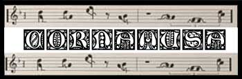
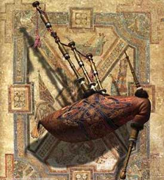
La cornamusa è
un diffuso strumento musicale a fiato. A doppia ancia, come il moderno oboe,
essi possiedono un suono caldo e penetrante adatto per accompagnare le danze e
in generale la musica all'aperto. La cornamusa è formata da un sacco a tenuta
stagna (otre), ottenuto cucendo insieme alcune pelli di animali, sul quale
vengono innestati due o più strumenti di legno; il primo è munito di sette fori
anteriori per le dita i quali permettono di eseguire la melodia, mentre il
restante o i restanti tubi producono un suono fisso detto "bordone". La funzione
del sacco, oltre a permettere di far suonare simultaneamente a un solo esecutore
melodia e bordone, è principalmente quella di fornire una pressione d'aria
costante per mezzo della pressione del braccio sul sacco e svincolata dalla
capacità e dalla forza del soffio del suonatore il quale, dopo aver inizialmente
riempito completamente il sacco, può limitarsi a ripristinare ogni tanto il
livello di pressione; tale accorgimento, che consente di suonare per molto tempo
senza stancare eccessivamente l'esecutore, fa della cornamusa lo strumento più
adatto per accompagnare le lunghe feste da ballo.
Il liuto ha un costo medio di 50 monete d'oro ed un peso pari a 3 lbs.
MODIFICATORI MUSICALI SPECIFICI
| TIPOLOGIA DI MUSICA | MODIFICATORE |
| MUSICA RISTORATRICE | nessun modificatore |
| MUSICA DELLA MARCIA | bonus di + 1 |
| MUSICA DELLA GUERRA | malus di -1 |
| MUSICA DELLA RESISTENZA | bonus di + 1 |
| MUSICA DELLA SCONFITTA | nessun modificatore |
| MUSICA DELLA RAPIDITA' | nessun modificatore |
| MUSICA DEGLI EROI | bonus di + 1 |
| MUSICA DELL'ORRORE | malus di -1 |
| MUSICA DELLA NINNA-NANNA | nessun modificatore |
| MUSICA DELL'AGILITÀ | nessun modificatore |
| MUSICA DELLA DISTRUZIONE | malus di -1 |
| REQUIEM DELLA PACE ETERNA | nessun modificatore |
| CANZONE DELLA PARALISI | nessun modificatore |
| MELODIA DELLA CURA MIRACOLOSA | nessun modificatore |
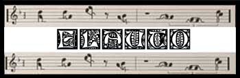
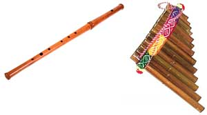
Questo antico
strumento deriva da un semplice tubo cavo che produceva un’unica nota
riverberante quando si soffiava aria al suo interno. L’aggiunta di fori, da 6 a
8, consentì agli artisti di variare le tonalità e un eventuale foro per il
pollice posto vicino all’estremità superiore, permise di abbassare le note di un
ottava. I flauti sono di varie dimensioni, ma i più comuni misurano in lunghezza
tra i 30 cm. ed i 45 cm. Il fatto che i flauti siano molto semplici da suonare e
relativamente facili da costruire li rende popolari tra coloro che non possono
permettersi o che non sono in grado di imparare la tecnica di strumenti più
complessi. Alcuni cantori ritengono che questa semplicità sia un vantaggio: essi
affermano che il flauto rassereni il pubblico e migliori la capacità
dell’esecutore di pronunciare efficacemente incantesimi di ammaliamento come
sonno, charme e simili. E' possibile distinguere tra il comune flauto diritto
che possiede una serie di fori per le dita che consentono di modulare le note
dello strumento ed il cd. flauto di Pan
che è
costruito da una serie di canne cave o tubi lignei di differente lunghezza,
legate insieme dalla più piccola alla più grande. Per suonarlo, il musicista
soffia all’estremità dei tubi, producendo un suono molto simile a quello di un
certo numero di minuscoli flauti di legno. Muovendo il flauto di pan da
un’estremità all’altra, il cantore può suonare diverse note. Alternare
rapidamente le note ricrea quell’effetto dolce e fluttuante per cui lo strumento
è famoso. Semplice ma suggestivo, il fauto di Pan è lo strumento
preferito dai satiri e dal resto del popolo dei boschi, anche gli umani e alcuni
elfi trovano gradevole la sua musica.
Il flauto diritto ha un costo medio di 5 monete d'oro ed un peso pari a
1/2 lbs.
Il flauto diritto ha un costo medio di 8
monete d'oro ed un peso pari a 1/2 lbs.
MODIFICATORI MUSICALI SPECIFICI
| TIPOLOGIA DI MUSICA |
MODIFICATORE FLAUTO DIRITTO |
MODIFICATORE FLAUTO DI PAN |
| MUSICA RISTORATRICE | nessun modificatore | nessun modificatore |
| MUSICA DELLA MARCIA | nessun modificatore | nessun modificatore |
| MUSICA DELLA GUERRA | malus di -1 | malus di -1 |
| MUSICA DELLA RESISTENZA | nessun modificatore | nessun modificatore |
| MUSICA DELLA SCONFITTA | nessun modificatore | nessun modificatore |
| MUSICA DELLA RAPIDITA' | bonus di + 1 | bonus di + 1 |
| MUSICA DEGLI EROI | nessun modificatore | nessun modificatore |
| MUSICA DELL'ORRORE | malus di -1 | malus di -1 |
| MUSICA DELLA NINNA-NANNA | nessun modificatore | nessun modificatore |
| MUSICA DELL'AGILITÀ | nessun modificatore | bonus di + 1 |
| MUSICA DELLA DISTRUZIONE | malus di -1 | malus di -1 |
| REQUIEM DELLA PACE ETERNA | nessun modificatore | nessun modificatore |
| CANZONE DELLA PARALISI | nessun modificatore | nessun modificatore |
| MELODIA DELLA CURA MIRACOLOSA | nessun modificatore | nessun modificatore |
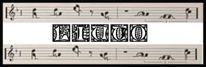
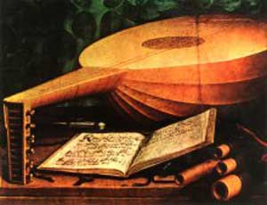
DESCRIZIONE
Il liuto è uno
strumento a corde di legno. Il legno è il materiale impiegato nella costruzione
della tavola armonica e ovviamente di tutto il corpo dello strumento. Una delle
caratteristiche strutturali di questo strumento è la forma della cassa armonica
bombata o a guscio. Il liuto è uno strumento formato da un legno concavo sul
modello della testuggine, con una apertura situata quasi nel centro e un lungo
manico sopra cui sono tese le corde, in maniera regolare dalla parte inferiore
proprio sotto l'apertura
fino alla parte superiore del manico. Il suonatore non solo lo sostiene con la
mano sinistra, ma nello stesso tempo con pressione delle dita sempre della mano
sinistra preme o solleva le corde. Anche l'altra mano sia con le dita che col
plettro percuote le stesse corde. I liuti misurano da 75 a 90 cm. in lunghezza,
e circa due terzi del totale sono occupati dalla cassa.
Il liuto ha un costo medio di 75 monete d'oro ed un peso pari a 4 lbs.
MODIFICATORI MUSICALI SPECIFICI
| TIPOLOGIA DI MUSICA | MODIFICATORE |
| MUSICA RISTORATRICE | bonus di + 1 |
| MUSICA DELLA MARCIA | nessun modificatore |
| MUSICA DELLA GUERRA | malus di -1 |
| MUSICA DELLA RESISTENZA | nessun modificatore |
| MUSICA DELLA SCONFITTA | nessun modificatore |
| MUSICA DELLA RAPIDITA' | nessun modificatore |
| MUSICA DEGLI EROI | nessun modificatore |
| MUSICA DELL'ORRORE | malus di -1 |
| MUSICA DELLA NINNA-NANNA | bonus di + 1 |
| MUSICA DELL'AGILITÀ | nessun modificatore |
| MUSICA DELLA DISTRUZIONE | malus di -1 |
| REQUIEM DELLA PACE ETERNA | nessun modificatore |
| CANZONE DELLA PARALISI | nessun modificatore |
| MELODIA DELLA CURA MIRACOLOSA | bonus di + 1 |
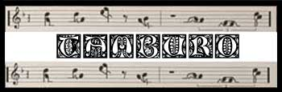
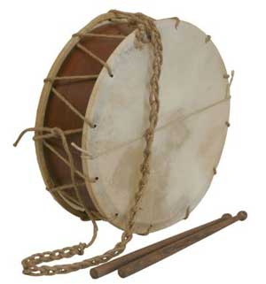
Il tamburo è
forse il più antico tra tutti gli strumenti, è presente in infinite varietà. Un
tamburo è fatto solitamente di pelle, pergamena o altro materiale simile, ben
teso in corrispondenza dell’apertura di un cilindro o bacino di legno cavo.
Quest’apertura ricoperta viene chiamata membrana del tamburo. Alcuni tamburi
hanno una sola membrana; altri due o più. Il suono si origina dalla percussione
della membrana con bacchette, mazze o anche le mani. I tamburi sono molto comuni
tra tutte le razze e culture grazie alla loro capacità di stimolare forti
emozioni, creare un sottofondo ritmato per le danze e offrire un buon
contrappunto per melodie intonate da altri strumenti. Le rare eccezioni sono
costituite dagli elfi, che ritengono questi strumenti alquanto molesti ed
estremamente noiosi (pregiudizio rinforzato, probabilmente dall’entusiasmo con
cui molti loro nemici si dilettano a suonarli). La semplice musica dei tamburi
è, invece, molto apprezzata dagli umanoidi. Il
tamburo è lo strumento ideale per la musica di ritmo marziale e per battere il
tempo in marcia.
Il tamburo ha un costo medio di 15 monete d'oro ed un peso pari a 2 lbs.
MODIFICATORI MUSICALI SPECIFICI
| TIPOLOGIA DI MUSICA | MODIFICATORE |
| MUSICA RISTORATRICE | malus di -1 |
| MUSICA DELLA MARCIA | bonus di + 1 |
| MUSICA DELLA GUERRA | bonus di + 1 |
| MUSICA DELLA RESISTENZA | nessun modificatore |
| MUSICA DELLA SCONFITTA | nessun modificatore |
| MUSICA DELLA RAPIDITA' | nessun modificatore |
| MUSICA DEGLI EROI | bonus di + 1 |
| MUSICA DELL'ORRORE | nessun modificatore |
| MUSICA DELLA NINNA-NANNA | malus di -1 |
| MUSICA DELL'AGILITÀ | nessun modificatore |
| MUSICA DELLA DISTRUZIONE | nessun modificatore |
| REQUIEM DELLA PACE ETERNA | malus di -1 |
| CANZONE DELLA PARALISI | nessun modificatore |
| MELODIA DELLA CURA MIRACOLOSA | malus di -1 |
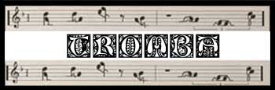
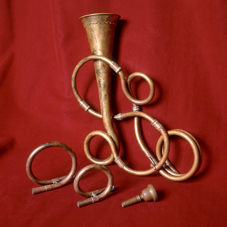
Nata
anch'essa come strumento di segnalazione, la tromba naturale si rivelò adatta
anche per uso artistico: la grande lunghezza del tubo sonoro permetteva ai
suonatori più esperti di articolare, esclusivamente per mezzo delle labbra,
melodie piuttosto complesse utilizzando i suoni armonici acuti dello strumento.
La tromba ha un costo medio di 20 monete d'oro ed un peso pari a 2 lbs.
MODIFICATORI MUSICALI SPECIFICI
| TIPOLOGIA DI MUSICA | MODIFICATORE |
| MUSICA RISTORATRICE | malus di -1 |
| MUSICA DELLA MARCIA | bonus di + 1 |
| MUSICA DELLA GUERRA | bonus di + 1 |
| MUSICA DELLA RESISTENZA | nessun modificatore |
| MUSICA DELLA SCONFITTA | nessun modificatore |
| MUSICA DELLA RAPIDITA' | nessun modificatore |
| MUSICA DEGLI EROI | nessun modificatore |
| MUSICA DELL'ORRORE | nessun modificatore |
| MUSICA DELLA NINNA-NANNA | malus di -2 |
| MUSICA DELL'AGILITÀ | nessun modificatore |
| MUSICA DELLA DISTRUZIONE | bonus di + 1 |
| REQUIEM DELLA PACE ETERNA | malus di -1 |
| CANZONE DELLA PARALISI | malus di -1 |
| MELODIA DELLA CURA MIRACOLOSA | malus di -1 |
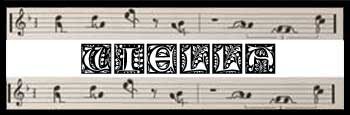
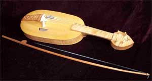
La viella è un
importante strumento ad arco che gode di grande ammirazione da parte dei
letterati e dei musicisti. Strumento regale e versatile rientra, per il suo
suono dolce e gradevole, fra gli "onesti" strumenti ammessi nell'educazione
delle fanciulle. Grazie al numero di corde, da tre a cinque, e alle differenti
accordature, la viella si presta a svariate funzioni divenendo il mezzo
privilegiato per l'accompagnamento del canto da parte di trovatori e musicisti
sia professionisti sia dilettanti. La viella è costituita da una cassa di
risonanza di varia forma, originariamente ovale e successivamente a forma di 8
per facilitare il movimento dell'arco. La cassa è formata da una tavola armonica
e da un fondo collegati da una fascia di legno incurvata. Il manico può essere
ricavato da un prolungamento della cassa o innestato al corpo principale. Sulla
tavola armonica è posto il ponticello sopra il quale sono tese le corde che
dalla cordiera raggiungono il cavigliere dove sono collocati i piroli per
l'accordatura dello strumento. Il cavigliere può essere a forma di cuore o di
disco. La tavola armonica è provvista di due fori posti ai lati del ponticello
e, negli strumenti di pregiata fattura, di intarsi perimetrali e fori decorativi
di varia forma.
La viella un costo medio di 90 monete d'oro ed un
peso pari a 3 lbs.
MODIFICATORI MUSICALI SPECIFICI
| TIPOLOGIA DI MUSICA | MODIFICATORE |
| MUSICA RISTORATRICE | nessun modificatore |
| MUSICA DELLA MARCIA | malus di -1 |
| MUSICA DELLA GUERRA | nessun modificatore |
| MUSICA DELLA RESISTENZA | malus di -1 |
| MUSICA DELLA SCONFITTA | bonus di + 1 |
| MUSICA DELLA RAPIDITA' | nessun modificatore |
| MUSICA DEGLI EROI | nessun modificatore |
| MUSICA DELL'ORRORE | bonus di + 1 |
| MUSICA DELLA NINNA-NANNA | nessun modificatore |
| MUSICA DELL'AGILITÀ | nessun modificatore |
| MUSICA DELLA DISTRUZIONE | malus di -1 |
| REQUIEM DELLA PACE ETERNA | bonus di + 1 |
| CANZONE DELLA PARALISI | nessun modificatore |
| MELODIA DELLA CURA MIRACOLOSA | nessun modificatore |
| INCANTAMENTO | Enchanted Melody |
| ORIGINE | MAGICA |
| POTENZA | Least Minor Enchantment ( 75 xp, 150 gp) |
| SCUOLA DI MAGIA | ENCHANTMENT |
|
DESCRIZIONE
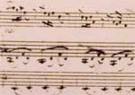 |
E' possibile infondere questo incantamento su un qualsiasi strumento musicale. La magia di questo incantamento minore non produce altro effetto che esaltare le normali capacità musicali dello strumento rendendolo più semplice da suonare. Per tale motivo chi utilizza uno strumento musicale incantato con questo incantamento minore riceve un bonus di +1 a tutte le prove nella competenza musical instrument. |